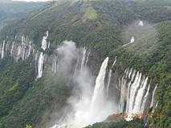

All About- 'Meghalaya'
Meghalaya is a hilly state in northeastern India.
The name means "the abode of clouds" in Sanskrit.
The capital of Meghalaya is 'Shillong'.
The population of Meghalaya as of 2016 is estimated to be 3,211,474.
Meghalaya covers an area of approximately 22,430 square kilometres, with a length to breadth ratio of about 3:1.

Culture of Meghalaya
The people living there speak many languages but English is the official language of the state. The most spoken languages in Meghalaya are-
Traditional folk dances in the state of Meghalaya are generally held in public places in the open ground.
Different communities have different dance forms for instance- Khasis, Garos and Pnars.